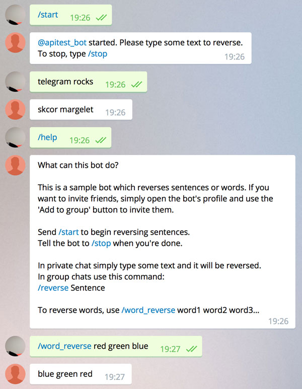

Examples
Bots
There are two example projects available:
-
Examples/hello-bot- a trivial bot which responds to/greetcommand. -
Examples/word-reverse-bot- demonstrates how to handle start and stop requests, keep session state and parse command arguments. Behaves differently in private and group chats. Uses a router and a controller.
TBD: an example using an SQLite database.
Building a bot
Let's build the second example.
git clone https://github.com/zmeyc/telegram-bot-swift.git
cd telegram-bot-swift/Examples/word-reverse-bot
swift build
If everything is correct, you will see:
Cloning /Users/user/Temp/telegram-bot-swift
Resolved version: 0.2.1
Cloning https://github.com/IBM-Swift/SwiftyJSON.git
Resolved version: 6.0.0
Compiling Swift Module 'SwiftyJSON' (3 sources)
Compiling Swift Module 'TelegramBot' (46 sources)
Compiling Swift Module 'wordreversebot' (1 sources)
Linking .build/debug/word-reverse-bot
Storing the token in source code is not a good idea, so there are two options of passing the token to bot:
Via environment variable:
Add the bot's token to ~/.profile:
export WORD_REVERSE_BOT_TOKEN="TOKEN"
Replace TOKEN with the token obtained from BotFather.
And reload the environment:
source ~/.profile
By storing the token in a file:
echo "TOKEN" > WORD_REVERSE_BOT_TOKEN
Run the bot
.build/debug/word-reverse-bot
Add your bot in Telegram, and play with it:
